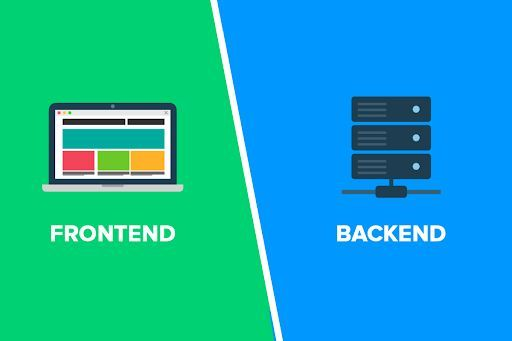
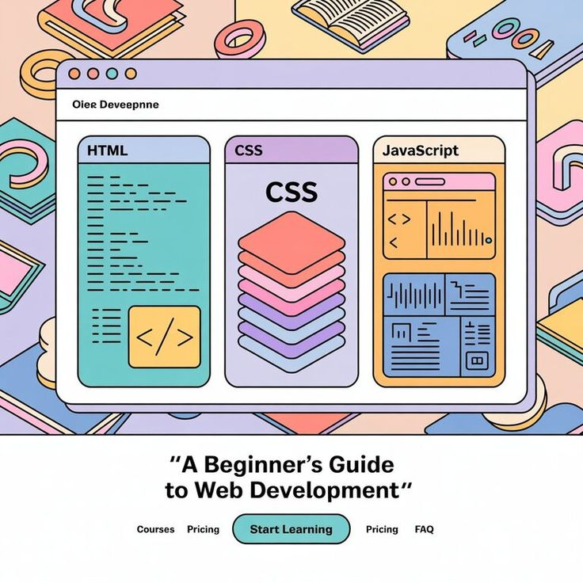
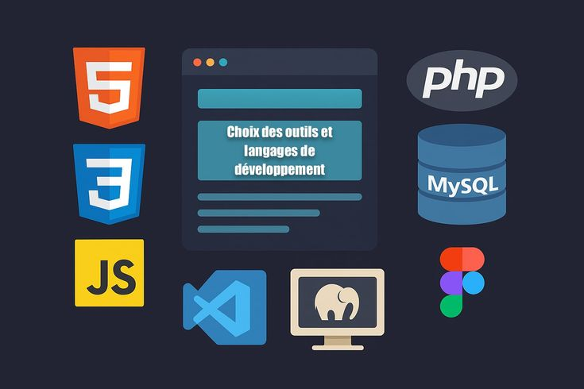
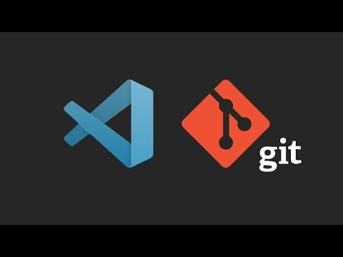
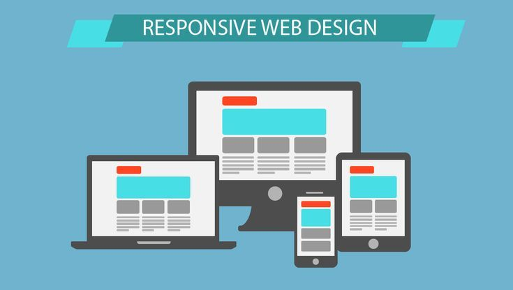
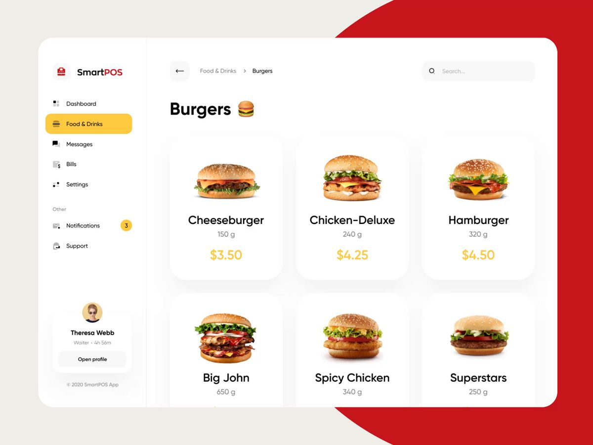

Desarrollo Web
Introducción a la Creación de Sitios Web
¿Qué es el Desarrollo Web?
Definición:
Es el proceso de construir y mantener sitios web para Internet o una intranet.
Frontend vs. Backend:
Frontend es lo que el usuario ve, Backend es el motor que lo hace funcionar.

Tecnologías Frontend
HTML, CSS y JavaScript:
Los tres pilares de la web. Estructura, estilo e interactividad.
Frameworks Populares:
Herramientas como React, Angular y Vue.js que agilizan el desarrollo.

Tecnologías Backend
Lenguajes:
PHP, Python, Ruby y Node.js son algunas de las opciones más populares.
Bases de Datos:
SQL (estructuradas) y NoSQL (no estructuradas) para almacenar la información.

Herramientas y Entornos
Editores de Código:
VS Code, Sublime Text, etc., son nuestro taller de trabajo.
Control de Versiones:
Git y GitHub nos permiten colaborar y mantener un historial de cambios.

Diseño Responsivo
Importancia:
Asegura que el sitio se vea y funcione bien en cualquier dispositivo (móvil, tablet, escritorio).
Técnicas y Frameworks:
Bootstrap, Flexbox y Grid son esenciales para lograrlo.

Pruebas y Despliegue
Pruebas:
Verificamos que todo funcione correctamente antes del lanzamiento (pruebas unitarias, de integración).
Despliegue:
Es el proceso de poner la web online usando FTP o servicios en la nube (Heroku, AWS).
Tendencias Futuras
Progressive Web Apps (PWAs):
Webs que se comportan como aplicaciones nativas.
Inteligencia Artificial:
Integración de IA para chatbots, personalización y más.
Conclusiones
El desarrollo web es un campo vasto que combina lógica y creatividad.
Es una habilidad fundamental y con alta demanda en el mundo digital actual.

¡Muchas Gracias!
Aquí les dejo un pequeño video resumen